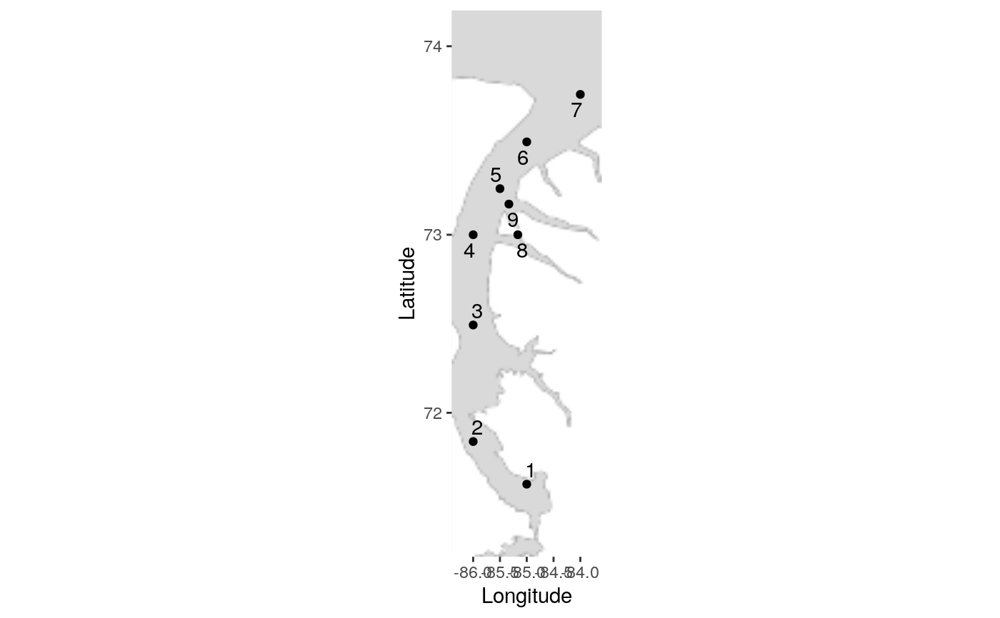
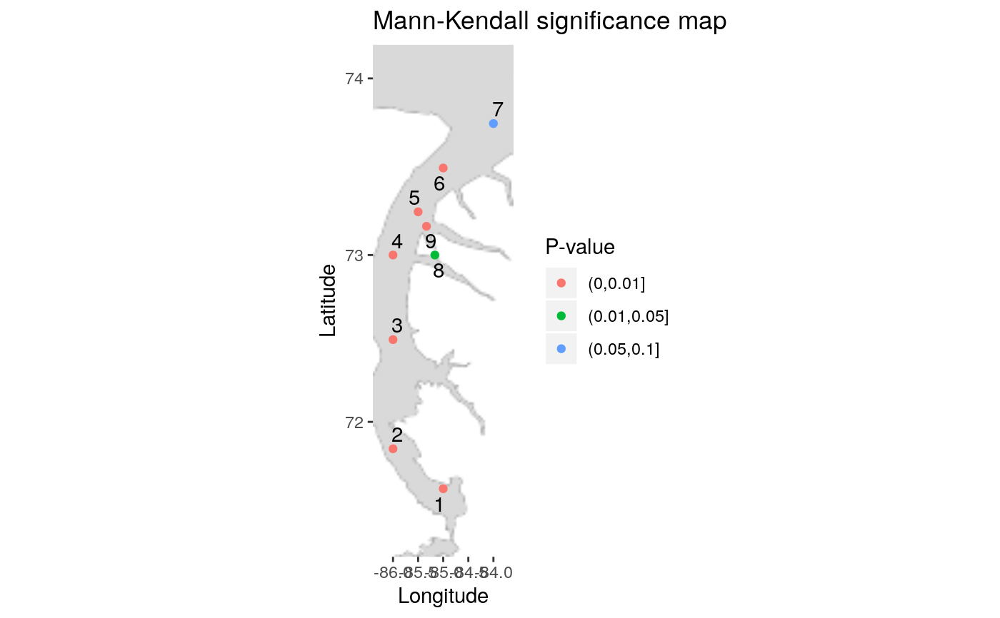
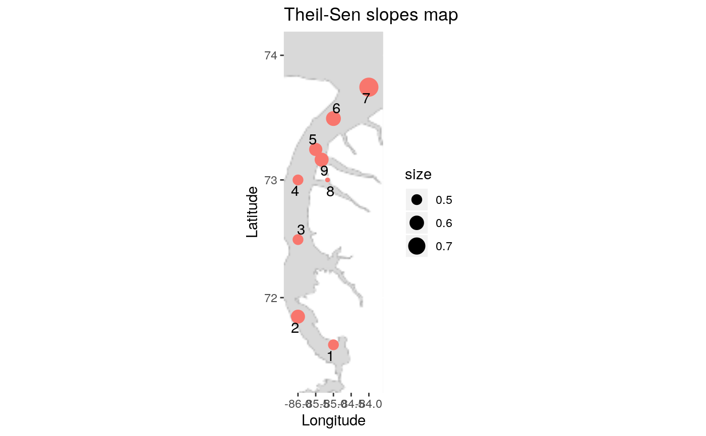
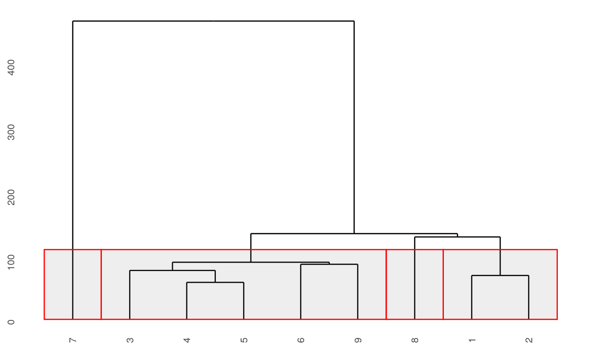
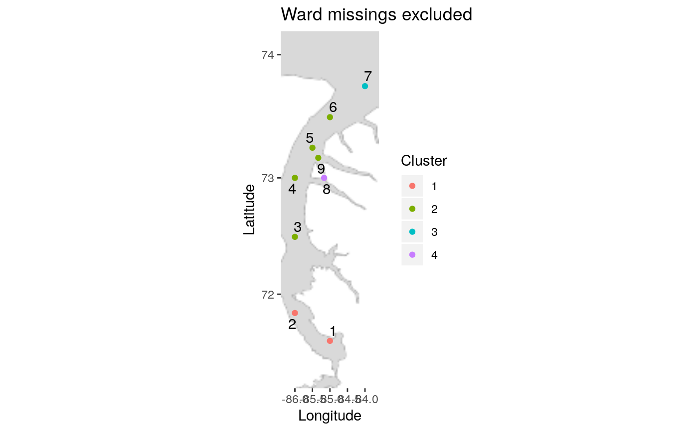
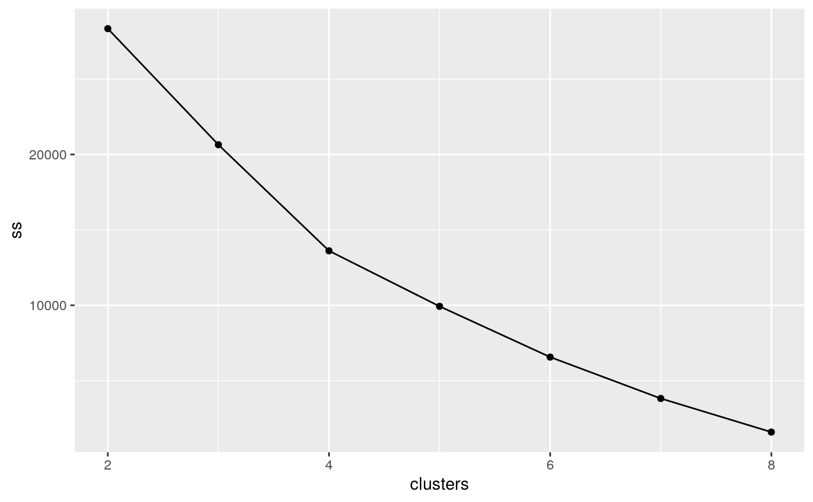
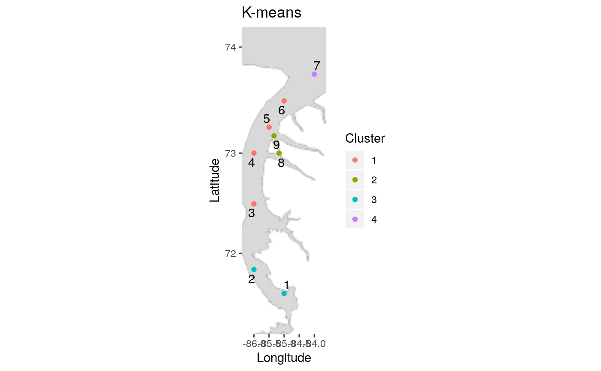

Make the whole analysis for a data set
make_everything(d, locations, bounding_box = F, zoom = 5, scaling = 1, n_cluster)
Arguments
| d | wide-format data set (see make_wide) |
|---|---|
| locations | lats and longs of the locations (data frame with three columns Location, Longitude, Latitude) |
| bounding_box | bounding box for map: bottom left long, lat; top right long, lat, longitudes W negative. Defaults to FALSE; then determined from data. |
| zoom | zoom for map; higher requires more map tiles, but produces better map. Default 5, max 18. |
| scaling | global scaling factor for points on Theil-Sen map, default 1 (bigger makes all points bigger) |
| n_cluster | number of clusters to use for Ward and K-means maps |
Value
list of 2: the temporal results from nake_temporal; the spatial results from make_spatial.
Examples
make_everything(nine_points, nine_points_locations, n_cluster=4)#>#>#> $temporal #> $temporal[[1]]#>#> Warning: Removed 3 rows containing non-finite values (stat_smooth).#> Warning: Removed 3 rows containing missing values (geom_point).#> #> $temporal[[2]]#> Warning: Removed 3 rows containing non-finite values (stat_smooth).#> Warning: Removed 3 rows containing missing values (geom_point).#> #> $temporal[[3]] #> # A tibble: 9 x 10 #> location data z z_star ratio P_value P_value_adj P_value_2 P_value_adj_2 #> <dbl> <lis> <dbl> <dbl> <dbl> <dbl> <dbl> <chr> <chr> #> 1 1 <tib… 3.00 3.00 1 2.71e-3 0.00271 0.002711… 0.00271100079 #> 2 2 <tib… 3.23 3.23 1 1.25e-3 0.00125 0.001246… 0.00124659143 #> 3 3 <tib… 2.77 2.77 1 5.61e-3 0.00561 0.005614… 0.00561463786 #> 4 4 <tib… 2.90 2.90 1 3.76e-3 0.00376 0.003761… 0.00376148351 #> 5 5 <tib… 2.97 3.95 0.564 2.99e-3 0.0000771 0.002991… 0.00007714201 #> 6 6 <tib… 3.26 3.26 1 1.11e-3 0.00111 0.001106… 0.00110663955 #> 7 7 <tib… 2.10 1.85 1.28 3.59e-2 0.0641 0.035942… 0.06412927249 #> 8 8 <tib… 2.76 2.10 1.74 5.71e-3 0.0361 0.005706… 0.03605693803 #> 9 9 <tib… 3.60 3.60 1 3.19e-4 0.000319 0.000318… 0.00031863801 #> # … with 1 more variable: P_level <fct> #> #> $temporal[[4]] #> # A tibble: 2 x 2 #> `P_value_adj <= alpha` n #> <lgl> <int> #> 1 FALSE 1 #> 2 TRUE 8 #> #> $temporal[[5]] #> # A tibble: 9 x 3 #> location data theil_sen #> <dbl> <list> <dbl> #> 1 1 <tibble [47 × 2]> 0.5 #> 2 2 <tibble [47 × 2]> 0.583 #> 3 3 <tibble [47 × 2]> 0.5 #> 4 4 <tibble [48 × 2]> 0.5 #> 5 5 <tibble [48 × 2]> 0.56 #> 6 6 <tibble [48 × 2]> 0.613 #> 7 7 <tibble [48 × 2]> 0.789 #> 8 8 <tibble [48 × 2]> 0.438 #> 9 9 <tibble [48 × 2]> 0.583 #> #> $temporal[[6]] #> # A tibble: 1 x 7 #> mean SD min Q1 median Q3 max #> <dbl> <dbl> <dbl> <dbl> <dbl> <dbl> <dbl> #> 1 0.563 0.101 0.438 0.5 0.56 0.583 0.789 #> #> #> $spatial #> $spatial[[1]]#> Warning: no non-missing arguments to min; returning Inf#> Warning: no non-missing arguments to max; returning -Inf#> Warning: no non-missing arguments to min; returning Inf#> Warning: no non-missing arguments to max; returning -Inf#> #> $spatial[[2]]#> Warning: no non-missing arguments to min; returning Inf#> Warning: no non-missing arguments to max; returning -Inf#> Warning: no non-missing arguments to min; returning Inf#> Warning: no non-missing arguments to max; returning -Inf#> #> $spatial[[3]]#> Warning: no non-missing arguments to min; returning Inf#> Warning: no non-missing arguments to max; returning -Inf#> Warning: no non-missing arguments to min; returning Inf#> Warning: no non-missing arguments to max; returning -Inf#> #> $spatial[[4]]#> #> $spatial[[5]]#> Warning: no non-missing arguments to min; returning Inf#> Warning: no non-missing arguments to max; returning -Inf#> Warning: no non-missing arguments to min; returning Inf#> Warning: no non-missing arguments to max; returning -Inf#> #> $spatial[[6]]#> #> $spatial[[7]]#> Warning: no non-missing arguments to min; returning Inf#> Warning: no non-missing arguments to max; returning -Inf#> Warning: no non-missing arguments to min; returning Inf#> Warning: no non-missing arguments to max; returning -Inf#> #> $spatial[[8]]#> #> $spatial[[9]]#> Warning: no non-missing arguments to min; returning Inf#> Warning: no non-missing arguments to max; returning -Inf#> Warning: no non-missing arguments to min; returning Inf#> Warning: no non-missing arguments to max; returning -Inf#> #>